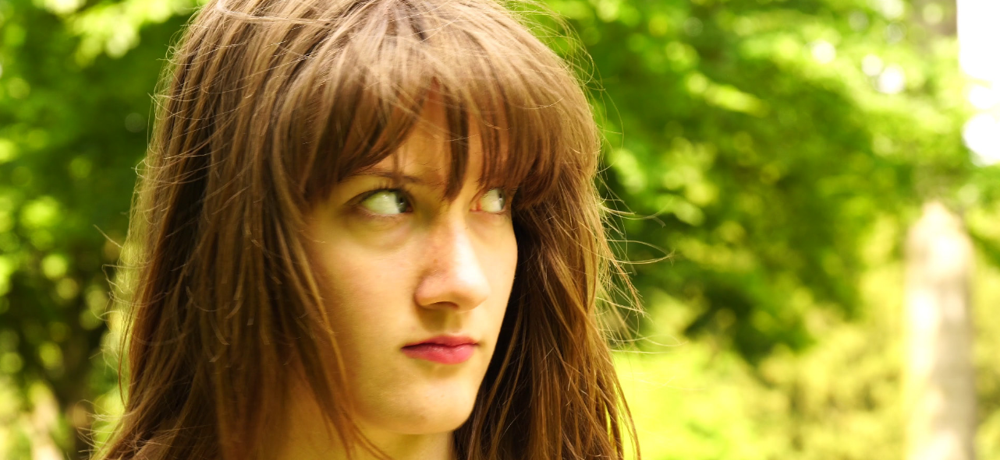

Narratief
Produceer een video over een allerdaagse handeling
Tijdens het eerste jaar van de CMD studie heb ik bij Media Design 2 een video in elkaar gezet die een emotie, in dit geval obsessief, zou overbrengen d.m.v. alleen shots. Ik heb eerst een storyboard moeten maken met de soort shots die ik wilde gebruiken. Daarna heb ik gefilmd met mijn groepje en een verhaal gecreeërd door middel van bepaalde shots achter elkaar te zetten. Dit heb ik allemaal met een professionele camera gedaan. Na het filmpje gemaakt te hebben, heb ik ook nog soundeffects eronder gezet die de sfeer en de emotie zouden overbrengen.

Shot van the video - Hoofdpersoon ziet persoon aankomen